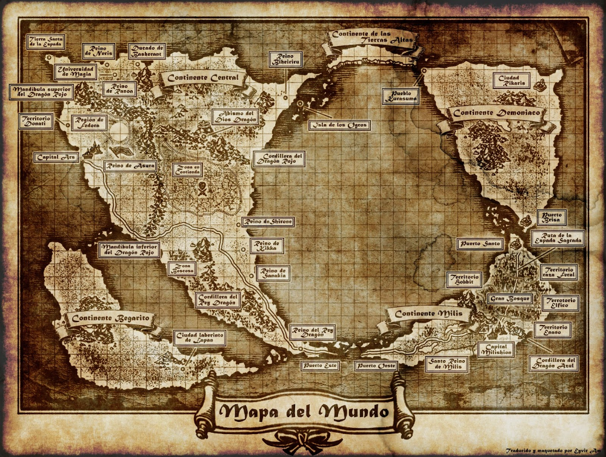

7 PODERES MUNDIALES
MAPA
ARCOS
PERSONAJES
SOBRE MUSHOKU
MAPA DEL MUNDO

Mapa del mundo
Zonas principales
El mapa de mushoku se divide en 5 zonas principales:
El continente Central
El continente Demoniaco
El continente Milis
El continente Begarito
El continente de las Tierras Altas